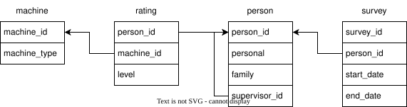

Primary and Foreign Keys
The previous tutorial explained how to combine information from two tables using inner join and left join. This tutorial will explain how we can tell when it makes sense to do this, and introduce our first complex database. To start, let's look at a diagram showing the four tables in the survey database.

Let's start with person, which has four columns: person_id, personal, family, and supervisor_id (which we will discuss in the next section). person_id is shown in bold italics to indicate that it is the table's primary key: each row in the table has a non-null person_id, and each of those values is unique. These values can therefore be used to uniquely identify specific rows in the table. We can check that by selecting all of the people and inspecting the person_id values by eye:
select person_id from person;
A better way is to count the number of rows in the table, the number of non-null person_id values, and the number of distinct person ID values. Remember, count(*) counts rows, while count(column_name) counts the number of non-null values in that particular column. We haven't seen count(distinct column_name) before, but as you might guess, it counts the number of distinct values in a particular column.
select
count(*) as num_rows,
count(person_id) as num_non_null,
count(distinct person_id) as num_distinct
from person;
Now let's take a look at the survey table. Each survey has a survey ID, the ID of the person who did the survey, and the survey's start and end dates. survey_id is in bold italics, which tells us that each survey has a unique ID. person_id, on the other hand, is just in italics, and there's an arrow connecting it to the person table's primary key, which is also called person_id. The use of italics and the arrow signals that survey.person_id is a foreign key, i.e., a value stored in one table that references the primary key of another table. This relationship tells us that:
- It makes sense to use
survey.person_id = person.person_idas a condition in a join because everysurvey.person_idis guaranteed to refer to an existingperson.person_id. - Several surveys might refer to the same person (or equivalently, one person might have done several surveys). This is called a one-to-many relationship.
Let's write some queries. Who is in the person table?
select * from person;
How many surveys has Ascensión Sierra done? Her person_id is P001, so we can answer the question by filtering the survey table and then aggregating.
select count(*) as num_surveys from survey
where person_id = 'P001';
What if we want Ascensión's name displayed along with this count? To get that, we need to join the tables.
select person.personal, person.family, count(*)
from person join survey
on person.person_id = survey.person_id
where person.person_id = 'P001';
What if we want to get Ascensión's full name in a single column? We can do that by concatenating her personal and family name using the || operator (which is sometimes called "glue"). As the output of the query below shows, || does for text what + does for numbers.
select person.personal || person.family as full_name, count(*)
from person join survey
on person.person_id = survey.person_id
where person.person_id = 'P001';
Whoops: we probably want a space between Ascensión's personal and family names, so we will glue her personal name to a space and then glue that to her family name (just as we would write 1 + 2 + 3).
select person.personal || ' ' || person.family as full_name, count(*)
from person join survey
on person.person_id = survey.person_id
where person.person_id = 'P001';
Now, what if we want the number of surveys done by each person ordered by family and personal name?
select person.personal || ' ' || person.family as full_name, count(*)
from person join survey
on person.person_id = survey.person_id
group by person.person_id
order by person.family, person.personal;
Notice that "Águila" (with an acute accent) comes after "Sierra". Correcting this mistake is out of the scope of this tutorial, but can be done by installing the International Components for Unicode and writing the query like this:
select * from person order by family, personal collate 'es_ES';
-
When did the earliest survey done by each person start?
-
Which people have done 17 or more surveys?
-
Just as
sumadds up all the values in a column,group_concatconcatenates all the text in a column. For example, if the column is calledname, thenselect group_concat(name, ':')joins all the values innamewith colons. Use this to write a query that generates two columns: a person's full name, and a comma-separated list of the IDs of the survey that person has done. -
Explain what the following query produces and why.
select person.personal || ' ' || person.family
from person left join survey
on person.person_id = survey.person_id
where survey.survey_id is null;
Self-Joins
As a reminder, here's the structure of the survey database.

Notice that the person table has a foreign key called supervisor_id that refers back to the table's own primary key, person_id. This relationship makes sense: supervisors are people, so they're stored in the same table as everyone else. However, if we want to generate a list of people's names and their supervisors' names, we can't just join person to person.
select *
from person inner join person
on person.person_id = person.supervisor_id;
The problem is that person.person_id and person.supervisor_id are ambiguous: are we referring to the left-hand use of the person table or the right-hand use? To resolve this, we give each copy of the table an alias using as, just as we gave columns names using as. We also have to specify the columns that we want using two-part table.column notation.
select
pa.personal as pa_personal,
pa.family as pa_family,
pb.personal as pb_personal,
pb.family as pb_family
from person pa join person pb
on pa.person_id = pb.supervisor_id;
Joining a table to itself is called a self join. The hard part is figuring out whether pa is the minion and pb is the supervisor or vice versa. The logic is that the supervisor of person pb is person pa, which means pa is the supervisor and pb is the minion. (Alternatively, we can inspect the first couple of rows, check back against the person table, and decide that way.) Let's rewrite the query to show the relationship explicitly.
select
pa.personal || ' ' || pa.family as supervisor,
pb.personal || ' ' || pb.family as minion
from person pa join person pb
on pa.person_id = pb.supervisor_id
order by pa.family, pa.personal;
-
Write a query that finds the full names of everyone who doesn't have a supervisor. (Hint: you do not need to use a
join.) -
Write a query to find all the people who supervise someone who supervises someone. (Hint: you will need to join three copies of
personto get the person, their boss, and their grand-boss.)
Many-to-Many Relationships
Each survey is done by one person, which means that people have a one-to-many relationship with surveys. However, any number of people can have ratings for any number of machines and vice versa, which means these two tables have a many-to-many relationship. These relationships can be hard to express in a table: if, for example, we knew that people never have ratings for more than three machines, we could add machine_1, machine_2, and machine_3 columns to person, but (a) we would have to check several columns if we wanted to find a particular machine, and (b) we would have to redesign our table if the rules changed and people could have ratings for four or five machines.
A better approach is to create another intermediate table that stores the relationship between the two tables we're interested in. Such a table is sometimes called a join table because its main purpose is to allow us to join two other tables. The rating table in our database is an example of a join table. Each row stores a foreign key into person and a foreign key into machine, which shows that the person has some relationship to the machine. The table also stores level, which is the actual rating (or null), but it is quite common for join tables to only store pairs of foreign keys.
So, which people have ratings for which machines?
select
person.personal, person.family, machine.machine_type, rating.level
from
person join rating join machine
on
person.person_id = rating.person_id
and
rating.machine_id = machine.machine_id
where
rating.level is not null
order by
person.family, person.personal, machine.machine_type
;
-
Which people have a level of 3 or more on at least one machine?
-
Write a query that generates a comma-separated list of the machines that Asensio Amaya is rated on, even if the level is
null. (Hint: usegroup_concat.) -
Many of the
levelvalues inratingarenull. What do you think this might mean?